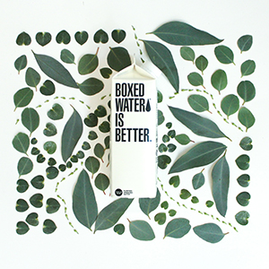

<!doctype html>
<html lang="ko">
<head>
<meta charset="UTF-8">
<title>리액트</title>

<script src="https://unpkg.com/react@17/umd/react.production.min.js"></script>
<script src="https://unpkg.com/react-dom@17/umd/react-dom.production.min.js"></script>
<script src="https://unpkg.com/babel-standalone@6.15.0/babel.min.js"></script>
<style>
.s1 {color: orange;}
</style>
</head>
<body>


<div id="wrap">
    
</div>


<script type="text/babel">

    //JSX: 리액트에서 태그처럼 사용 (진짜 html태그는 아님)
    // ReactDOM.render( JSX, 출력될 목적지 요소 );

    //두개 이상의 요소를 출력하려면 전체를 div로 감싼다.

    // br, hr, img 등의 단독

    let b = 7;

    let a = <div> 
                <h1 className="s1">제목</h1>
                <h1>헬로 { b /* 중괄호안에 자바스크립트 값을 불러올 수 있다*/}</h1>
                <p>안녕하세요</p>
                
                <br />
                <a href="http://www.naver.com" target="_blank">네이버</a>
            </div>
            
            ReactDOM.render( 
                a, 
                document.getElementById("wrap")
            );


    <div>
        <h1>제목</h1>
        <br />
    </div>


</script>
</body>
</html>


